Riven (PC)
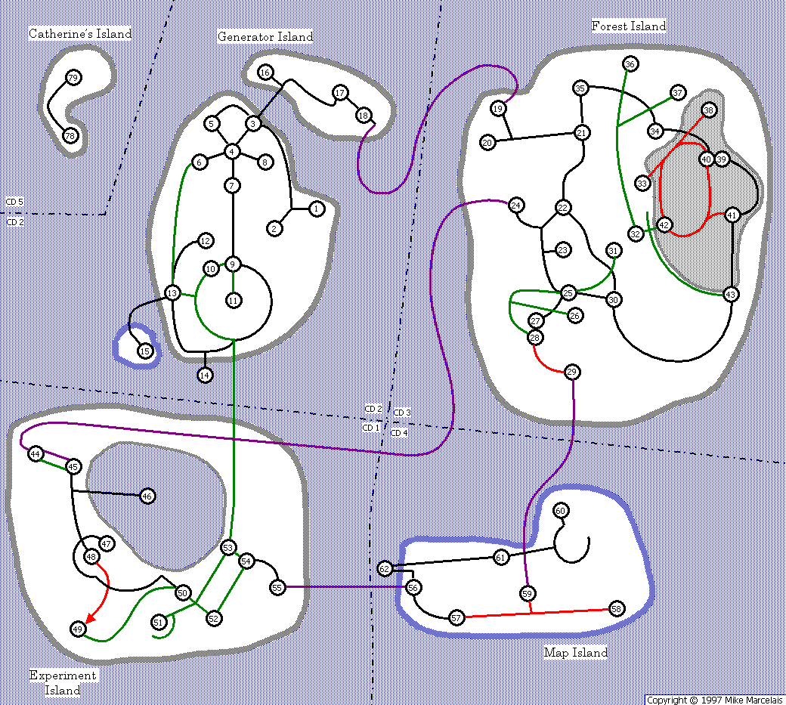
Saved Games
Riven CD Save → ScummVM CD Save
Riven DVD Save → ScummVM DVD Save
Island Names
Start, Generator, Dome, Temple
Village, Forest, Jungle, Large, Submarine
Book Making, Experiment, Workshop, Lake, Crater, Boiler
Garden, Map, Imager, Spike, Survey, sometimes also called plateau
Prisoner, Catherine's, Plateau, Small
Endings Paths
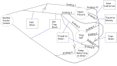
Endings Requirements
Can get impossible ending without solving marble puzzle.
Marble puzzle solved lets you visit Ghen.
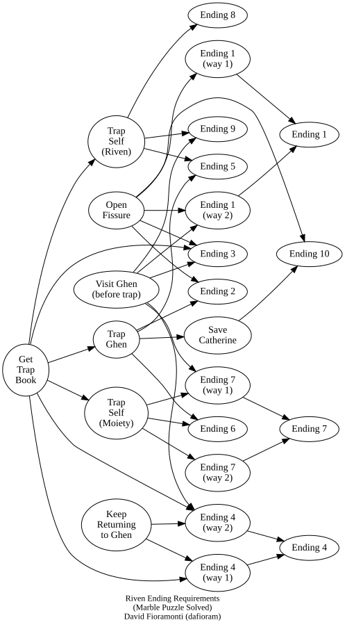
Keyboard
Space — skips animations that are on screen
Alt — show the menu
Island Shapes/Colors
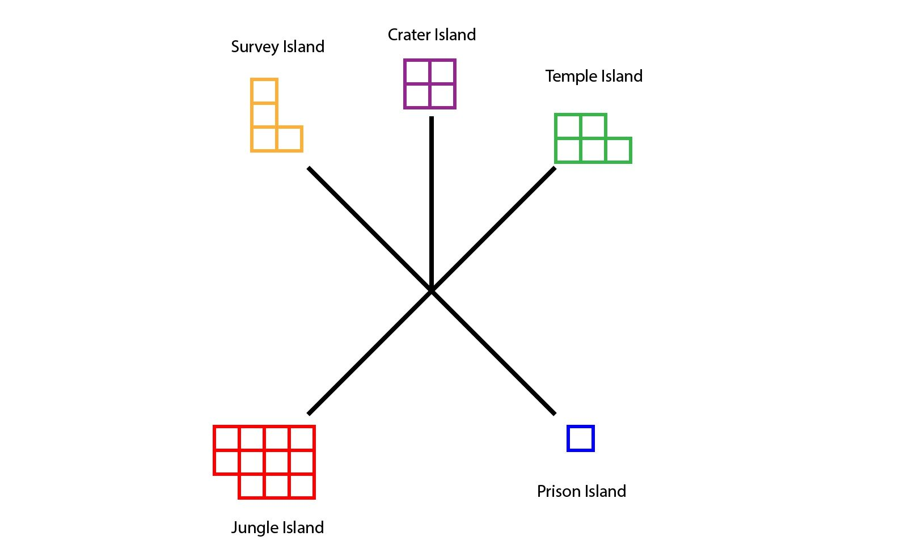
Dini Colors
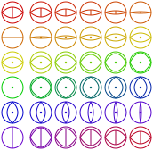
Rotation Room
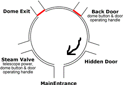
The initial state of the room is the same as the picture.
Ball Locations
Ball #1: Ghen's office. Animal 1 = fish in bay on Villagers' Island
Ball #2: Sand pen. Animal 2 = "ink" bug at gate on Villagers' Island
Ball #3: Village Arrive. Animal 3 = yttram — the little froggy thing that you catch in the trap on Bookbinding Island
Ball #4: Forest. Animal 4 = Sunner — on beach rock on Villagers' Island
Ball #5: Beach. Animal 5 = Wahrk — seen on bottom level of Survey (Map) Island
Animal Puzzle
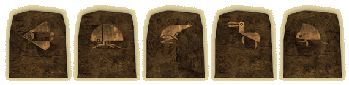
Stone locations are: South, South, West, North/East, North.
Marble Puzzle
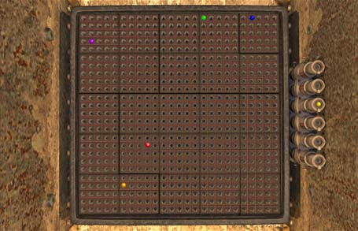
Boiler Puzzle
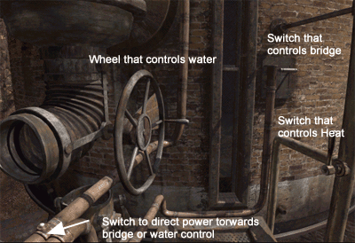
- Turn off heat.
- Raise bridge.
- Direct water to left.
- Turn wheel to drop water out.
Submarine Track
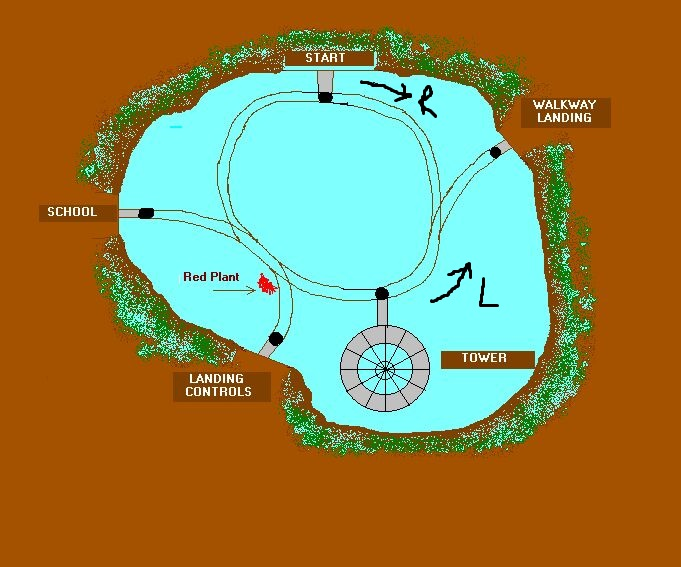
Dini Numbers
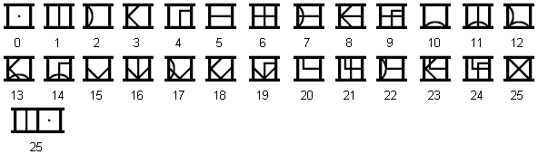
Landing Control Levers
From left to right:
- Start
- Walkway
- Tower
- Landing Controls
- School
The Fissure
Must pull out stop once near bottom left for the drill to go all the way to the left.
The lever up means the location is accessible via the submarine. Initially only the start and the landing controls are accessible.
Catherine Code
Changes, 5 sounds, of 3. Find in Ghen's room.
Dome Code
Changes, 5 numbers, 1–25. In Ghen's journal, numbers are in order.
Telescope Manhole Cover
Changes, 5 numbers, 1–5, non-repeating, code in Catherine's journal, obtained in Moiety.
Endings
The game can be finishable after solving the Fire Marble puzzle.
- Open the Star Fissure before visiting Ghen or Catherine.
- Visit Ghen and capture him in the trap book and go back and open the Star Fissure without freeing Catherine.
- Visit Ghen and do not capture him, and do not free Catherine, but go directly back and open the Star Fissure. Ghen shoots you.
- When Ghen holds the trap book up for you to go first, refuse to link. Return two more times and refuse both times.
- After capturing Ghen in the trap book, touch it yourself.
- After capturing Ghen in the trap book, return to the Moiety Age and touch it.
- Touch the trap book when Keta gives it to you in the Moiety Age.
- After Keta gives you the trap book, return to Riven and touch it before visiting Ghen. Ghen shoots you.
- Visit Ghen, then go to the Moiety Age and get the trap book. Touch the book before going back to Ghen. Get shot by Ghen. Very similar to Ending 8.
- Get trap book, trap Ghen, save Catherine, and open fissure. This is the best ending.